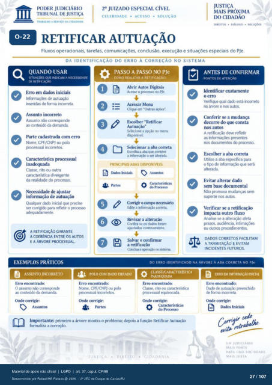

Transcrição automática em português, ainda não revisada. Confira grafia, prazos e termos jurídicos na imagem e no PDF antes de utilizar.
TRABALHO A segvtço DA CIDADANIA
CELERIDADE • ACESSO • SOLUÇÃO
DIREITOS • DIÁLOGO •
RETIFICAR AUTUAÇÃO
Fluxos operacionais. tarefas, comunicações. conclusão, execução e situações especiais do PJe.
DA IDENTIFICAÇÃO DO ERRO À CORREÇÃO NO SISTEMA
QUANDO USAR
SITUAÇÕES QUE INDICAM A NECESSIDADE
DE RETIFICAÇÃO
Erro em dados iniciais de autuação
inseridas de forma incorreta. Asunto incorreto
Assunto não correspnde ao conteúdo da demanda.
Parte cadastrada com erro Nome. CPF/CNPJ ou
prcressual incorretos. Característica pr(RessuaI
Classe, rito ou outra característica divergente
da realidade do prcxesso. Necessidade de ajustar
informação de autuação Qualquer dado inicial que precise
ser corrigido para refletir o prcxes:) adequadarnente.
A RETIFICAÇÃO GARANTE
A COERÊNCIA ENTRE OS AUTOS
E A ÁRVORE
PASSO A PASSO NO PJe
COVO REALIZAR A RETIFICACÀO
Abrir Autos Digitais Acesse o prcx:esso no PJe.
Acessar Menu Cliqtr em "Outras
Escolher "Retificar Autuação"
Selecione a disponivel.
Selecionar a aba «meta Escolha a atx• que contem
a a alterada.
PRINCIPAIS ABAS DISPONÍVEIS:
0 do Prcxesso
Corrigir 0 Edite a informaçao correta.
Revisar a alteração Confira se os dados foram
corretamente. Salvar e confirmar
a retificação a OF•raçü) sisterru
ANTES DE CONFIRMAR
PONTOS DE ATENCAO
Identificar exatamente o erro
Verifique qual está incorreto na árvore e nos autos.
Conferir a mudança decorre do que consta
nos autos A deve refletir
as presentes nos prcxesso.
Escolher a aba correta Utilize a especifica para
o de informação que será Evitar alterar dado
sem base documental Não promova mudanças sem
suprte nos autos. Verificar se a retificação
impacta outro fluxo Analise se a alteração afeta
prazos. audiência, ou outros prcxedirnentos.
DADOS CORRETOS FACILITAM
A TRAMITAÇÃO E EVITAM
INCIDENTES FUTUROS.
EXEMPLOS PRÁTICOS
ASSUNTO INCORRETO
Erro encontrado: O assunto corresv»nde
conteúdo da Onde corrigir:
O Assuntos
DO ERRO IDENTIFICADO NA ÁRVORE À ABA CORRETA NO me
POLO COM DADO ERRAIX)
Erro encontrado: Nome. CPF/CNPJ ou
prcxessual incorretos. corrigir:
CIASSE/CARACTERISTICA
INADFÃ)UADA
Erro encontrado: Classe. rito
prcxessual «luiv«xada. Onde corrigir.
Características do Pr«xesso
primeiro a árvore rncÑra o problema; der»is a função Retificar Autuação formaliza a correção.
ERROEM INFORMAÇÃO INICIAL
Erro encontrado: Dado de autu;ü) preenchido
de forma incorreta. Onde corrigir:
UM JUDICIARIO
MAIS FORTE
PARA ('VA SOCIEDADE
MAIS JUSTA
Ver também o infográfico original (página 27)
